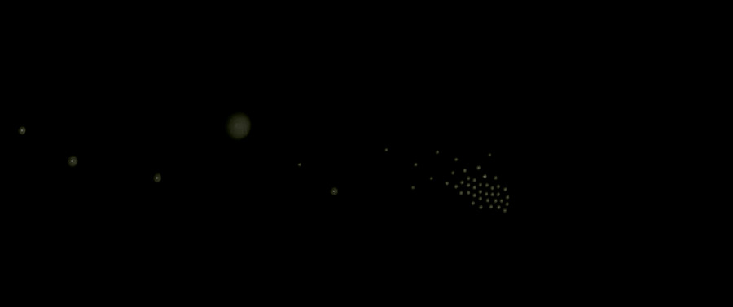

Synthetic · Ecology
Current technologies have blurred the boundary between biology and technology or analog and digital, creating a synthetic ecology governed by responsive systems and nuanced management regimes. This synthetic ecology ushers in a new paradigm, rich with potential as we imagine new relationships between culture, settlement, infrastructure, and evolving biological systems. The interstices of these new relationships become the medium in which the course examines new potentials for sensing, monitoring, automation, and robotics. LA 4101 is an advanced digital technologies elective — a seminar of lectures, discussions, and work sessions — focused on the tenuous relationship between digital and biological systems.“This synthetic ecology ushers in a new paradigm, rich with potential as we imagine new relationships between culture, settlement, infrastructure, and evolving biological systems.”

About the course
LA 4101 Synthetic Ecologies was an advanced digital technologies elective taught in the Robert Reich School of Landscape Architecture at Louisiana State University in Spring 2013. The seminar examined the tenuous relationship between digital and biological systems through a series of lectures, reading discussions, and work sessions, and asked students to research responsive technologies and develop working prototypes. Students worked in Rhinoceros, Grasshopper, Firefly, Processing, and the Arduino microcontroller with various sensors and servos.
Faculty: Bradley E. Cantrell, Director and Associate Professor of Landscape Architecture. Meeting: Monday, 6:00–9:00pm.
The seminar overlapped with Allen Sayegh’s Responsive Environments course at the Harvard Graduate School of Design, taught concurrently; students shared resources and select lectures were held by video conference. The archive’s course description lists three assignments — documentation of software/hardware features, device-space research, and a speculative proposal — while the syllabus consolidates the semester into two projects.
The same theme was also taught in Fall 2013 as LA 4008 Synthetic Urban Ecologies, an advanced topic studio sited on the Port of Oakland and West Oakland with Justine Holzman and Urban Biofilter.